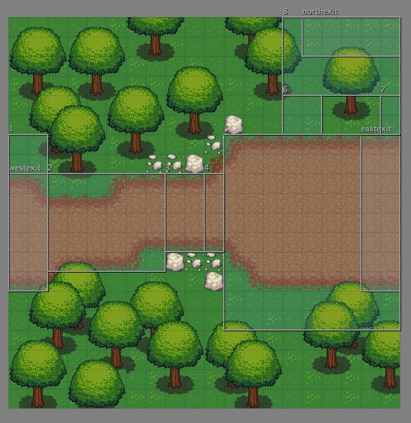

Adventure game prototype 2 - A* pathfinding Sun, Oct 14, 2012
I wanted to add an easy way to script a scene with various sprites doing different movements and animations at different times, but my current implementation of sprites was too tied to actions triggered from player input. Additionally, I was trying to use physics collision boxes for obstructions and have the NPC sprites avoid them, but they only knew the obstructions existed when they actually bumped into them.
Luckily, I just so happened to be taking an AI class through BerkeleyX, where the first lesson was on search algorithms. Once we started learning about how to get Pacman through a maze in the most efficient way possible, I knew it was just what I was looking for. I learned that if you represent your problem as a start state, a goal state, a series of actions that can transition between states, and a domain of states your guy could be in, you can solve your search problem in a very general way, the best being the A* search algorithm. Intuitively, A* search means trying the next cheapest possible state, where cheap is defined as the total cost of all the actions to get to that state plus an estimated cost of getting to the goal once you're at that state.
After reading a rant about game pathfinding, I decided to represent my search states as vertices of navigable rectangles, or navmesh, on my tile map, and actions as displacement vectors. My sprites would be able to take a list of displacement vectors and queue up a bunch of actions that will move the sprites along those displacement vectors at a given velocity. This is a sample of a sprite moving to a northern area, a western area, and eastern area and back to the northern area:
Moving the sprite in black from one area to another requires a new search, and once the sprite finishes the actions from that search, it executes another search to get to the next area. Notice that she tries to avoid trees and walks along the edge of the path. What's nice is that I can define the navigable areas, as well as possible goal areas in my Tiled map editor.

Tilemap with navmesh overlay
Next, I might either continue on with the exposition side of things and add dialogue and transitioning between scenes, or maybe add some fighting again.